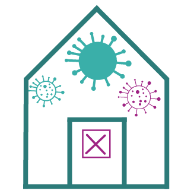

Hold deg hjemme fra du merker symptomer på luftveisinfeksjon, til mint ett døgn etter at du er helt frisk.
Hold avstand til andre i hjemmet.
De du bor med er ikke i karantene, men skal følge med på egen helse. Hvis de får symptomer, skal de holde seg hjemme.

Hjemmeisolasjon
Hvis du har fått påvist covid-19
Dersom du har fått påvist koronavirus må du isoleres.
Det betyr at du må holde deg hjemme hele tiden og ikke gå ut.
Du skal helst holde minst en meters avstand til de du bor sammen med og ha eget rom og bad når dette er mulig. Bruk egne baderomsartikler, inkludert eget håndkle.
Du må være nøye med hånd- og hostehygiene for å unngå å smitte andre i husstanden. Det er også viktig med hyppig rengjøring av hjemmet, spesielt de stedene som dere ofte tar på.
De du bor sammen med skal være i karantene.
Isolasjonen varer til 3 døgn etter at du er helt frisk og minst 8 dager etter at du ble syk.
Hjemmekarantene
Hvis du har vært i utlandet eller i kontakt med smittet
Når du er i hjemmekarantene skal du holde deg mest mulig hjemme. Du skal ikke gå på skole eller jobb, kun hjemmekontor.
Du skal heller ikke ta lengre reiser innenlands eller utenlands eller ta offentlig transport.
Du skal heller ikke reise ikke på hytta når du er i karantene.
Du bør unngå steder hvor det er vanskelig å holde avstand, og du skal som hovedregel ikke oppsøke offentlige steder, slik som butikker, apotek og kafeer
Du kan gå tur ute, men hold god avstand til andre.